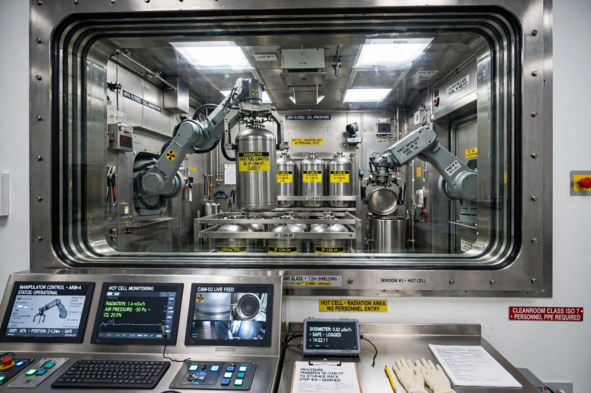

Nuclear reprocessing
Nuclear reprocessing is the chemical separation of fission products and actinides from spent nuclear fuel. Originally, reprocessing was used solely to extract plutonium for producing nuclear weapons. With commercialisation of nuclear power, the reprocessed plutonium was recycled back into mixed oxide fuel (MOX) for thermal reactors, and the separated uranium can also be reused. Reprocessing is performed today at large facilities such as La Hague in France, Sellafield in the United Kingdom, Mayak in Russia and Rokkasho in Japan.

Process
The dominant industrial method is PUREX (plutonium uranium reduction extraction), a liquid–liquid extraction process in which chopped fuel rods are dissolved in nitric acid and uranium and plutonium are separated from fission products using tributyl phosphate in a hydrocarbon solvent. The resulting high-level liquid waste is typically vitrified — incorporated into glass — for long-term storage. Advanced concepts such as pyroprocessing aim to keep plutonium mixed with other actinides to improve proliferation resistance and to burn long-lived actinides in fast reactors.
Economics and policy
Reprocessing recovers material representing most of the potential energy in the original fuel and reduces the volume and long-term heat load of waste requiring geological disposal, but fresh uranium has historically been cheaper than reprocessing, and the separated plutonium raises nuclear proliferation concerns. The United States abandoned commercial reprocessing in the 1970s on non-proliferation grounds and follows a "once-through" fuel cycle, while France, Russia, Japan, China and India maintain reprocessing programs.